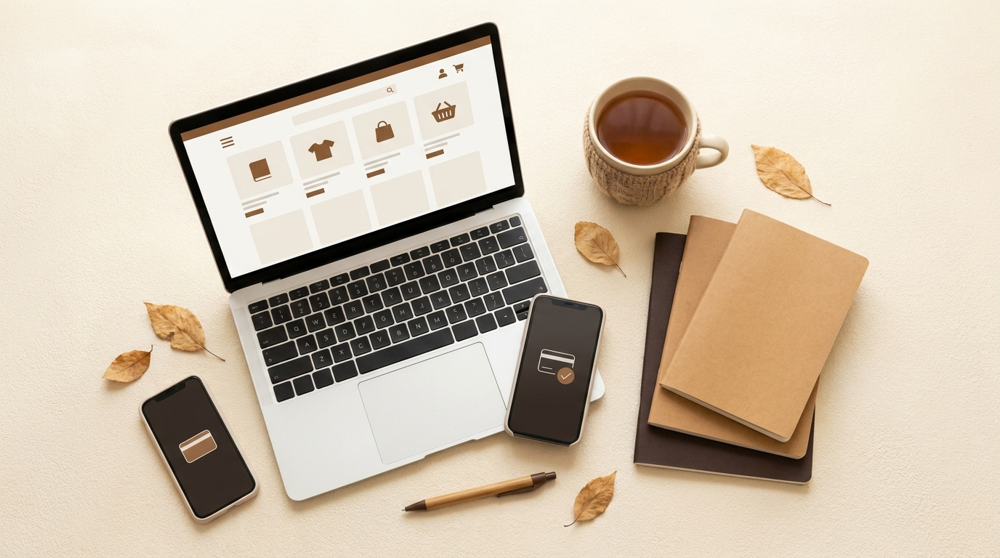

Does Gumroad Work in Pakistan? Payouts, Setup & Limits (2026)

If you are a Pakistani creator thinking about selling printables, templates or ebooks, the first worry is always the same: "Even if I sell, will I actually get my money?" I run my own Gumroad store from Karachi, so I went through Gumroad's current help pages to give you a clear answer, and I also point out where other blogs online disagree.
How Gumroad pays creators in Pakistan
Gumroad pays out to a local bank account in your local currency. For Pakistan, the listed payout currency is PKR. That means:
- Your buyers pay in US dollars (or see prices converted to their own currency).
- Gumroad converts the money at the exchange rate at the time of sale, not at the time of payout.
- Your payout arrives in your Pakistani bank account in rupees.
What is NOT supported
| Option | Status |
|---|---|
| Payoneer | Not supported by Gumroad |
| Wise | Not supported by Gumroad |
| Cheque, money order, wire transfer | Not supported |
| Payout in US dollars | No. Only the local currency listed for your country (PKR) |
| Bank account in another country | Not allowed. Your bank account must match your country of residence |
This is the most common mistake. People open a Payoneer account first and then cannot add it in Gumroad. For Pakistan, use a normal local bank account in your own name.
Why you may read "Gumroad does not work in Pakistan"
Some websites say Gumroad needs a US company (LLC) or Stripe for Pakistani sellers. That information appears to be based on older rules or on a different payout route. Gumroad's current official payout article lists Pakistan in its bank payout table with PKR. Rules can change, so always confirm inside your own account: open Settings > Payments and check whether Pakistan appears in the country list.
Step-by-step setup
- Create your Gumroad account and open Settings > Payments.
- Select Pakistan as your country and save it first. Changing the country later can clear saved bank, ID and address details.
- Enter your legal name, address and date of birth exactly as on your CNIC.
- Add your local bank account details (account title must match your name).
- Complete the verification. Gumroad may ask for a government-issued photo ID and proof of residence.
- Upload your product, publish it, and make a test purchase to see how the sale appears.
Payout timing, holds and minimums
- Bank processing: Gumroad says bank payouts take about 2 to 7 business days and can be delayed around bank holidays.
- Holding period: new sales are normally held for a few days before they become payable.
- Minimum balance: Gumroad requires a minimum balance before it pays out, and some countries have a higher minimum. Check the exact number on your Payouts page, because it can change.
Common problems for Pakistani creators
- Name mismatch: Gumroad profile name, CNIC and bank account title should all match.
- Wrong country saved: choose Pakistan before entering any bank details.
- Using someone else's bank account: payouts must go to an account in your own name.
- Expecting dollars: your bank will receive rupees, so plan prices with the conversion in mind.
Is it worth selling on Gumroad from Pakistan?
For digital products like printable planners, Canva templates and study guides, yes. Setup is free, you only pay a fee when you sell, and you reach international buyers who pay in dollars. The main limits are the payout wait and having no Payoneer option. If you want a complete walkthrough of listing a product, read my guide on how to sell digital products on Gumroad.
FAQ
Does Gumroad work in Pakistan?
Yes. Pakistan is on Gumroad's list of bank payout countries, paid in PKR.
Can I use Payoneer or Wise?
No. Gumroad does not pay out through Payoneer, Wise, cheques or wire transfers.
How long do payouts take?
Bank payouts take about 2 to 7 business days after Gumroad sends them.
Will I be paid in dollars?
No. Payouts to Pakistan are made in PKR, converted at the rate on the day of the sale.
Do I need a company?
According to Gumroad's current help page, you can use a personal local bank account. Confirm inside your own Payments settings.
Planning to monetize this blog too? Read my Google AdSense approval guide.